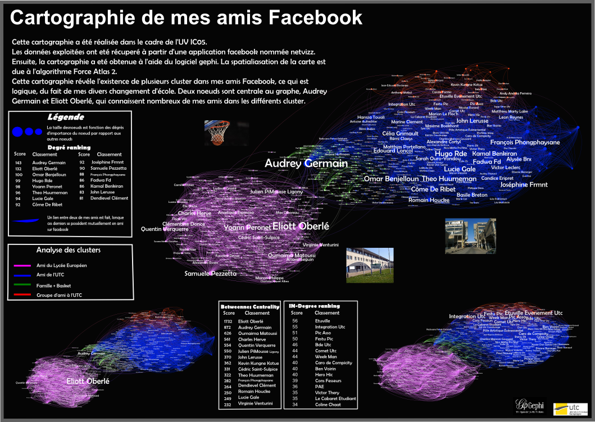

Bienvenue sur mon site IC05 de cartographie

Cartographie des réseaux sociaux
Comet
degré
Comet centralité
Integ
degré
Integ centralité
Mon
réseau
Site réalisée par SZEWE Nicolas dans le cadre de l'UV IC05